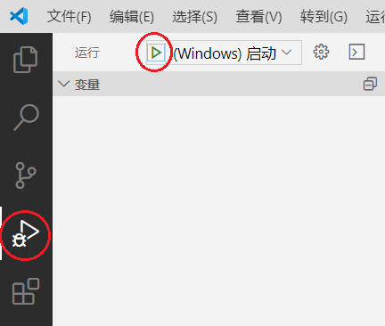
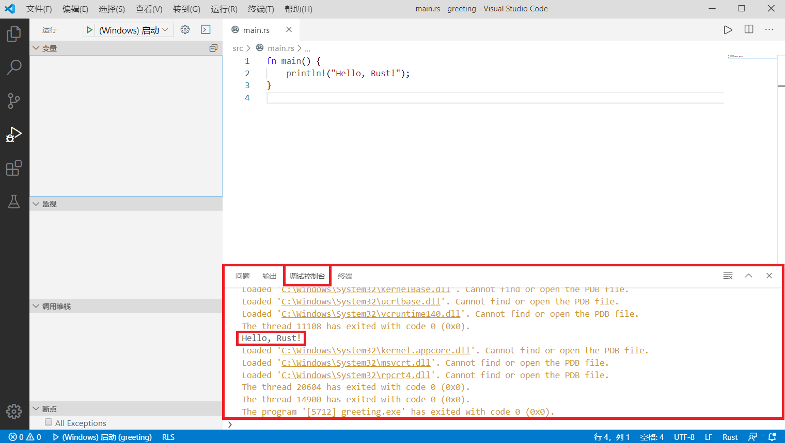
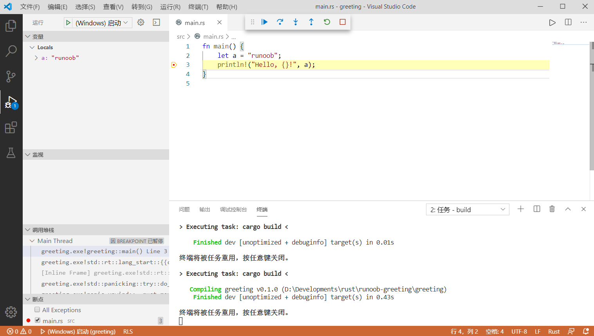

Cargo チュートリアル
Rust 開発において、ほとんどすべてのプロジェクトは Cargo を使用して管理・構築されています。Cargo は便利なワークフローと強力な機能を提供し、Rust 開発をより効率的かつ信頼性の高いものにしています。
Cargo とは
Cargo は Rust 公式のビルドシステム兼パッケージマネージャーです。主に次の2つの役割があります：
主に次の2つの役割があります：
プロジェクト管理：Cargo は Rust プロジェクトの作成、ビルド、管理に使用されます。Cargo を使用すると、新しいプロジェクトの作成、プロジェクトの依存関係の管理、プロジェクトのビルド・実行・テストなどの操作を簡単に行えます。
パッケージマネージャー：Cargo は Rust のパッケージマネージャーとしても機能します。開発者はプロジェクトに依存関係（サードパーティライブラリなど）を導入・管理でき、それらの依存関係のバージョン管理と互換性を確保できます。
Cargo の主な特徴と機能：
-
依存関係管理：Cargo はファイルを介して
Cargo.tomlプロジェクトの依存関係を管理します。このファイルには、プロジェクトに必要なすべての外部ライブラリとそのバージョンが列挙されています。 -
ビルドシステム：Cargo は Rust コンパイラ（rustc）を使用してプロジェクトをビルドし、依存関係のコンパイルとリンクを自動的に処理します。
-
パッケージレジストリ：Cargo はcrates.ioこの Rust コミュニティのパッケージレジストリと連携し、開発者がサードパーティライブラリを検索・追加・管理できるようにします。
-
ビルド構成：ファイルを通じて
Cargo.toml和Cargo.lock、Cargo は開発者がビルドオプション（コンパイラオプション、フィーチャー、ターゲットプラットフォームなど）を設定できるようにします。 -
プロジェクトテンプレート：Cargo は新しいプロジェクトを作成するためのテンプレートを提供しており、コマンドを使用して
cargo new新しいプロジェクトをすばやく作成できます。 -
テスト：Cargo はシンプルなコマンドを提供しており、
cargo testプロジェクトのユニットテストを実行できます。 -
ベンチマークテスト：Cargo はコマンドを使用した
cargo benchベンチマークテストをサポートしています。 -
公開（リリース）：コマンドを使用して
cargo publish開発者は自分のライブラリを crates.io に公開し、他の開発者が利用できるようにすることができます。 -
カスタムビルドスクリプト：Cargo はカスタムビルドスクリプトを使用して、より複雑なビルド要件に対処できます。
-
マルチターゲットプロジェクト：Cargo は1つのプロジェクトで、実行可能ファイル、ライブラリ、テスト、ベンチマークテストなどの複数のターゲットを定義できます。
-
クロスプラットフォームビルド：Cargo は Windows、macOS、Linux、およびさまざまな組み込みシステムを含む複数のプラットフォームにわたって Rust プログラムをビルドできます。
-
ビルドキャッシュ：ビルド速度を上げるため、Cargo はビルドキャッシュを使用してコンパイル済みの依存関係を保存します。
-
オフライン作業：Cargo はインターネットに接続しない環境でも動作し、ローカルにキャッシュされた依存関係を自動的に使用します。
-
プラグインシステム：Cargo は開発者が機能を拡張するためのプラグインを作成することを可能にします。
-
環境変数：Cargo は環境変数を使用してデフォルトのビルド・実行動作を上書きできます。
Cargo の機能
Cargo はプロジェクトの作成以外にも、ビルド（build）、実行（run）などの一連の機能を備えています。ビルドと実行はそれぞれ以下のコマンドに対応しています：
cargo new <project-name>：新しい Rust プロジェクトを作成します。cargo build：現在のプロジェクトをコンパイルします。cargo run：現在のプロジェクトをコンパイルして実行します。cargo check：現在のプロジェクトの構文エラーと型エラーをチェックします。cargo test：現在のプロジェクトのユニットテストを実行します。cargo update：Cargo.toml で指定された依存関係を最新バージョンに更新します。cargo --help：Cargo のヘルプ情報を表示します。cargo publish：Rust プロジェクトを crates.io に公開します。cargo clean：ビルド中に生成された一時ファイルとディレクトリをクリーンアップします。
VSCode で Rust プロジェクトを設定する
Cargo は優れたビルドツールです。VSCode を Cargo と組み合わせれば、VSCode は非常に便利な開発環境になります。
前の章で greeting プロジェクトを作成しました。次に VSCode で greeting フォルダを開きます（注意：runoob-greeting ではありません）。
greeting を開いたら、その中に新しいフォルダを作成します.vscode（vscode の前のドットに注意してください。このフォルダがすでにある場合は新規作成する必要はありません）。新しく作成した .vscode フォルダ内に tasks.json と launch.json の2つのファイルを作成します。ファイルの内容は以下の通りです：
tasks.json ファイル
launch.json ファイル（Windows システム向け）
launch.json ファイル（Linux システム向け）
launch.json ファイル（Mac OS システム向け）
次に VSCode 左側の「実行」をクリックします。
MSVC を使用している場合は「(Windows) 起動」を選択します。
MinGW を使用していて GDB をインストールしている場合は「(gdb) 起動」を選択します。gdb を起動する前に、launch.json の "miDebuggerPath" を入力してください。

プログラムのデバッグ実行が開始されます。実行出力は「デバッグコンソール」に表示されます：

VSCode で Rust をデバッグする
プログラムのデバッグ方法は他の環境と似ています。行番号の左側の赤い点をクリックしてブレークポイントを設定でき、実行中にブレークポイントに達すると一時停止し、開発者がリアルタイムの変数の値を監視できるようになります。

その他の拡張機能
cargo expand
pyl***@yandex.com
さらに、cargo の重要なサブコマンドをいくつか補足します：
またcargo build/run --releaserelease を使用したコンパイルは、デフォルトの debug コンパイルよりもパフォーマンスが10倍以上向上します。ただし、release はコンパイル速度が遅く、panic バックトレースの具体的な行番号が表示されないという欠点があります。
cargo expand
pyl***@yandex.com
apple@m1
app***m1.com
参考URL
M1 M2 チップを搭載した Apple コンピュータを使用する場合、CodeLLDB プラグインをインストールし、lunch.json で targetArchitecture を arm64 に指定する必要があります：
{ // Use IntelliSense to learn about possible attributes. // Hover to view descriptions of existing attributes. // For more information, visit: https://go.microsoft.com/fwlink/?linkid=830387 "version": "0.2.0", "configurations": [ { "name": "clang++ - Build and debug active file", "type": "lldb", "request": "launch", "program": "./benchncnn", "stopAtEntry": true, "cwd": "/Users/oldpan/deps/ncnn/build_debug/benchmark/", "environment": [], "externalConsole": false, "MIMode": "lldb", "targetArchitecture": "arm64" } ] }apple@m1
app***m1.com
参考URL
y77
281***7328@qq.com
修正リクエスト：tasks.json と launch.json の Windows コマンドに誤りがあります。
以下は正しい lauch.json です：
{ "version": "0.2.0", "configurations": [ { "name": "(Windows) 启动", "preLaunchTask": "build", "type": "cppvsdbg", "request": "launch", "program": "${workspaceFolder}/target/debug/${workspaceFolderBasename}.exe", "args": [], "stopAtEntry": false, "cwd": "${workspaceFolder}", "environment": [], "externalConsole": false }, { "name": "(gdb) 启动", "type": "cppdbg", "request": "launch", "program": "${workspaceFolder}/target/debug/${workspaceFolderBasename}.exe", "args": [], "stopAtEntry": false, "cwd": "${workspaceFolder}", "environment": [], "externalConsole": false, "MIMode": "gdb", "miDebuggerPath": "这里填GDB所在的目录", "setupCommands": [ { "description": "为 gdb 启用整齐打印", "text": "-enable-pretty-printing", "ignoreFailures": true } ] } ] }以下は正しい tasks.json です：
{ "version": "2.0.0", "tasks": [ { "label": "build", "type": "shell", "command": "cargo", "args": ["build"] } ] }y77
281***7328@qq.com